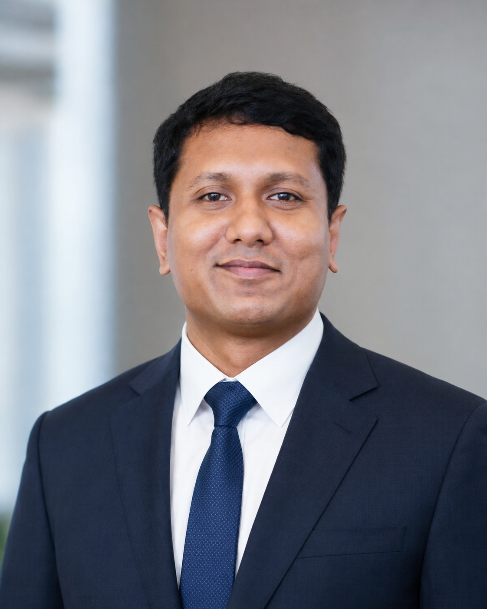

Biofluid Mechanics
Upper-airway airflow, obstructive sleep apnea, pseudoaneurysm treatment, ureteral stents, thrombosis modeling and patient-specific medical-twin workflows.
Academic Research Portfolio
Ph.D. Student and Doctoral Researcher in CFD, Biofluids, and Turbomachinery
I develop computational, experimental and data-driven methods for biomedical and engineering flow systems. My current work focuses on upper-airway medical twins, obstructive sleep apnea, pseudoaneurysm treatment, ureteral-stent flow and rim-driven pump and propeller systems at the Flow Information Lab, Gyeongsang National University.

Academic and Professional Milestones
Selected academic and professional milestones are shown first; earlier milestones remain available in the archive.
Research Focus
My research combines high-fidelity CFD, in-vitro validation, PIV-based flow measurement and reduced-order modeling to make complex flow systems more interpretable and useful for engineering and clinical decisions.
Upper-airway airflow, obstructive sleep apnea, pseudoaneurysm treatment, ureteral stents, thrombosis modeling and patient-specific medical-twin workflows.
Rim-driven pumps and propellers, drainage and booster pumps, duct and blade optimization, cavitation, erosion, hydraulic performance and CFD–PIV validation.
Koopman theory, dynamic mode decomposition, CNN-based autoencoders, and reduced-order models for faster prediction, diagnosis, and engineering design exploration.
Selected Work
A curated selection representing my main research directions. The complete chronological list is available below.
Introduces a Koopman-theory-based reduced-order modeling workflow for faster prediction of OSA-related breathing-power characteristics.
Combines in-vitro testing and CFD to examine flow obstruction and encrustation behavior in ureteral stents.
Develops biofluid and thrombosis models to support safer ultrasound-guided thrombin injection strategies.
Presents a breathing-diagram-based CFD framework for interpreting OSA-related airflow behavior across BMI groups.
Investigates how cavitation and erosion alter hydraulic performance and operational stability in submersible drainage pumps.
Evaluates duct-shape modifications for improved hydrodynamic performance of electric hubless rim-driven propellers.
Islam, M. D., Lee, C. J., & Kim, H. H. · Journal of Mechanical Science and Technology · Accepted.
Jeong, J. M., Lee, C. J., Islam, M. D., & Kim, H. H. · Journal of Mechanical Science and Technology · Accepted.
Zhang Junhui, Rakibuzzaman, M., Islam, M. D., Zhou, L., & Kim, H. H. · Irrigation and Drainage · Accepted.
Choi, Y. H., Cho, S., Tae, S. J., Kang, H. J., Islam, M. D., et al. · Journal of Thrombosis and Haemostasis. DOI
Kang, H.*, Islam, M. D.*, Choi, Y. H., Kim, H. H., & Koo, B. · Physics of Fluids, 38(2), 021917. DOI
Kang, H. J.*, Islam, M. D.*, Choi, Y. H., Lee, Y. K., Song, M. J., & Kim, H. H. · Physics of Fluids, 37(8). DOI
Islam, M. D., Kang, H. J., Tae, S. J., et al. · Scientific Reports, 15(1), 22034. DOI
Bae, Y. S., Islam, M. D., Choi, Y. D., Kang, H. J., Tae, S. J., & Kim, H. H. · Journal of Applied Fluid Mechanics, 18(9), 2202–2211. DOI
Chowdhury, M. S., Oliullah, M. S., Hossen, M. Z., et al., & Islam, M. D. · Medicine in Novel Technology and Devices, 100379. DOI
Rakibuzzaman, M., Islam, M. D., Kim, H. H., Suh, S. H., Zhou, L., & Iqbal, A. P. · Irrigation and Drainage. DOI
Mahmud, M. Z. A., Rabbi, S. F., Islam, M. D., & Hossain, N. · SPE Polymers, 6(1), e10161. DOI
Rakibuzzaman, M., Suh, S. H., Kim, H. H., Islam, M. D., Zhou, L., & El-Emam, M. A. · Alexandria Engineering Journal, 113, 431–450. DOI
Rakibuzzaman, M., Kim, H. H., Islam, M. D., Suh, S. H., Zhou, L., & Roshid, M. H. O. · Physics of Fluids, 36(12). DOI
Islam, M. D., Kim, J. S., Jeon, S. J., et al. · Physics of Fluids, 36(9), 091903. DOI
Rakibuzzaman, M., Kim, H. H., Suh, S. H., Islam, M. D., & Zhou, L. · Physics of Fluids, 36(8). DOI
Choi, Y. H., Kang, H. J., Kim, K. W., et al., Islam, M. D., et al. · World Journal of Urology, 42(1), 228. DOI
Mahmud, M. Z. A., Islam, M. D., & Mobarak, M. H. · Journal of Nanomaterials, 2023(1), 9270064. DOI
Al Mahmud, M. Z., Islam, M. D., & Rabbi, S. F. · Journal of the Mechanical Behavior of Biomedical Materials, 147, 106151. DOI
Zhang Junhui, Rakibuzzaman, M., Zhou, L., Islam, M. D., & Kim, H. H. · Manuscript in preparation.
Conference Activity
Oral presentations, international sessions, workshops, and a keynote lecture delivered from 2023 to 2026.
Current and Recent Work
Projects that represent my current research direction and collaborative experience.
CFD-based upper-airway modeling, patient-specific breathing analysis, and reduced-order prediction using Koopman and CNN-based methods.
Research support at the intersection of computational engineering, aerospace systems, digital analysis, and advanced composite applications.
Hydraulic performance analysis and shape optimization of rim-driven pumping systems for high-rise firefighting applications.
Computational assessment of internal flow behavior and hydraulic performance for small-hydropower by-pass piping systems.
In-vitro and computational investigation of injection location, thrombosis behavior, treatment success, and embolism risk.
Experimental and CFD evaluation of urine drainage, flow obstruction, stenosis effects, and encrustation behavior in ureteral stents.
Academic Background
Selected background information is shown here; the complete record is available in the downloadable CV.
Contact
Flow Information Lab
Department of Mechanical and Aerospace Engineering
Gyeongsang National University, Jinju-si, South Korea